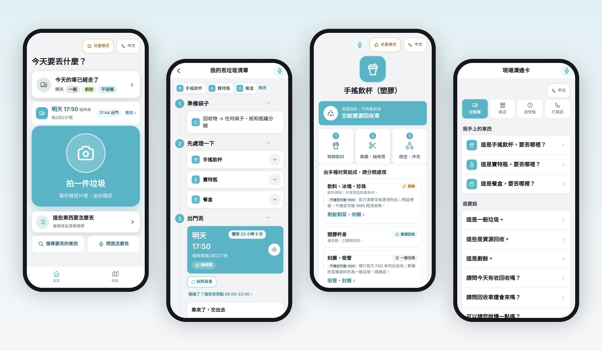
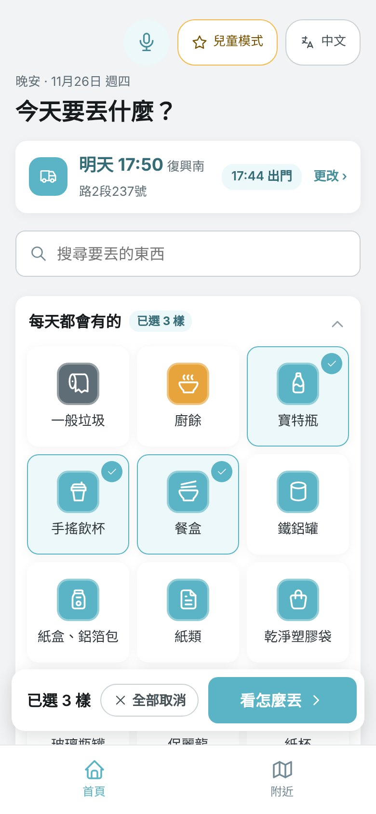
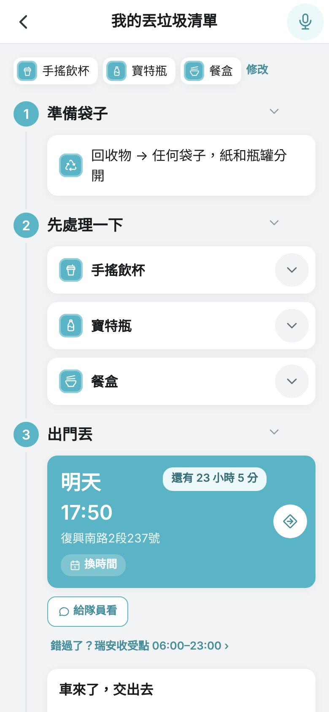
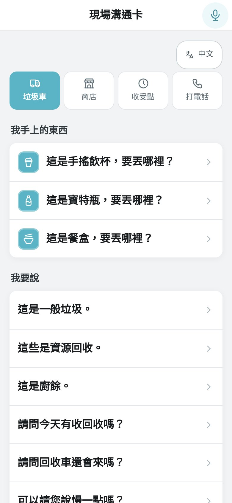
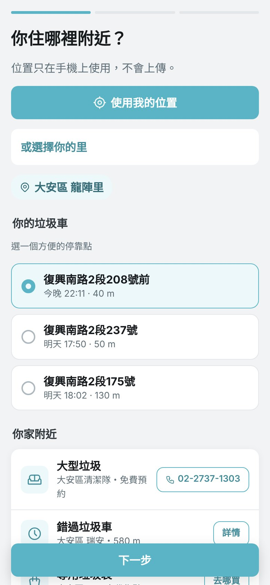
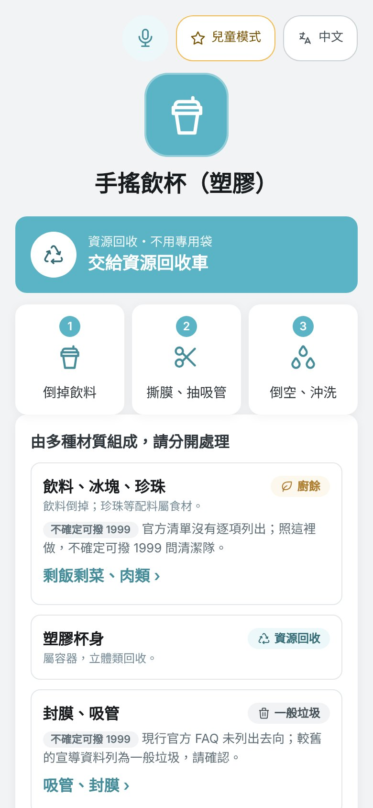
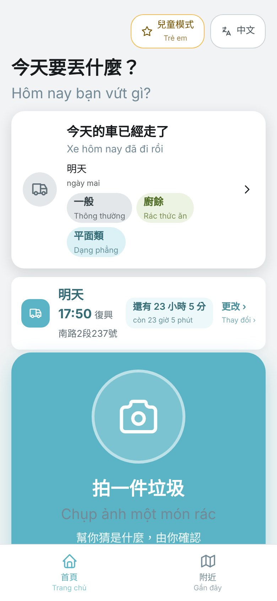
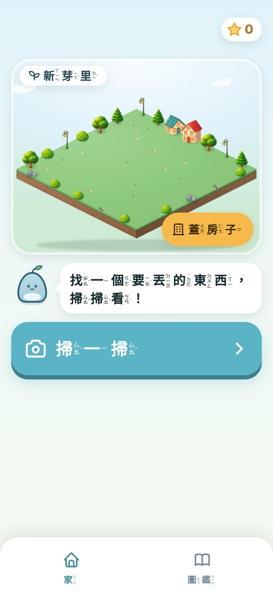

丟丟 TossTalk
垃圾怎麼丟，拍一下、用你的語言、一步一步告訴你。

Overview專案概述
臺北的垃圾規則寫得很清楚，但前提是看得懂中文。規則只有中文、名詞又抽象（立體類、平面類），看不懂就丟錯、被罰，或乾脆不敢丟。
我們以競賽主題「看不懂｜理解限制」出發，鎖定剛到臺北的外籍人士、新住民與孩子，做出臺北通裡的垃圾分類微服務「丟丟」。我負責介面設計與使用流程，團隊另外三位成員把辨識模型與功能串接起來，讓它真的能在手機上使用。
拍一件垃圾
拍一下就知道是什麼
辨識在手機上進行；答案查環保局規則表，不是 AI 生成
丟垃圾清單
一步一步帶著做
準備袋子 → 先處理 → 幾點去哪裡丟
雙語對照
8 種語言，兩種一起看
中文大字下方對照母語小字，家人與看護都看得懂
兒童模式
孩子也能學分類
每個字有注音，把垃圾拖進對的桶就拿到星星
阿蘭是越南新住民媽媽，手上有一杯喝完的手搖杯。今天週日，她也不知道今天收不收。PERSONA
不用打字、不用懂中文，打開就只問一件事：今天要丟什麼？
主流程：今晚要丟垃圾
把查規則、算時間、找地點拆成四個畫面，使用者只需要跟著往下走。



介面設計

首次設定
只設定一次，之後打開就能用
用一次定位，找出最近 3 個垃圾車停靠點、所屬里的清潔隊電話、錯過時的限時收受點與專用袋代售點。

品項頁
一個品項，三個步驟
手搖杯：倒掉飲料 → 撕膜、抽吸管 → 倒空沖洗；多材質拆件後各自標出去向。

雙語對照
中文大字，母語小字
在品名、步驟、分類等關鍵字下方，用小字顯示第二種語言，不改變版面。

兒童模式
同一套規則，孩子也看得懂
每個字都有注音；掃一掃或用選的，把垃圾拖進對的桶，做對了就拿到星星、蓋房子。
System設計規範
依《城市通入門指引》與臺北通 Figma「Town Pass UI Kit」設計，讓丟丟看起來就是臺北通的一部分。
- 底色 #F1F3F4、白卡片、主色 #5AB4C5；按鈕圓角 10、高 48；字級 24／18／16／14／12
- 觸控目標至少 48 px，照顧長輩與孩子的操作
- 不使用 emoji，圖示統一為 Tabler Icons 線條圖；品項依分類上色（一般灰、回收藍、廚餘黃、特殊橘、大型褐）
- 文字精簡：首頁與清單用短名稱，完整品名只在結果頁出現；每個步驟一行標題，細節收進「詳情」
Result成果
兩天內做出可在臺北通實機操作的微服務，入圍決賽。決賽規定只能實機操作、不用簡報，整套流程都在手機上現場走完。
種語言，含雙語對照
條核對過的規則上線
雲端 AI 費用，斷網也能用
種模式：一般與兒童